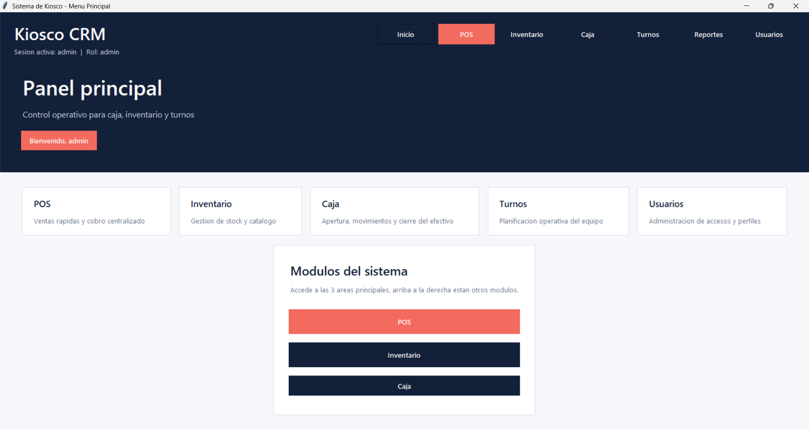
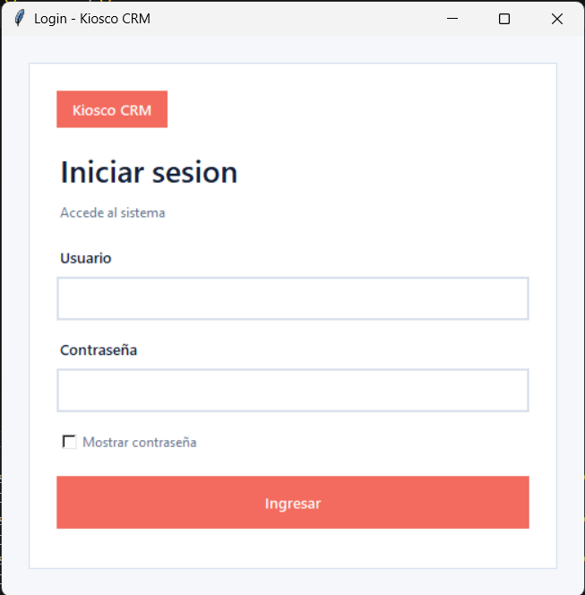
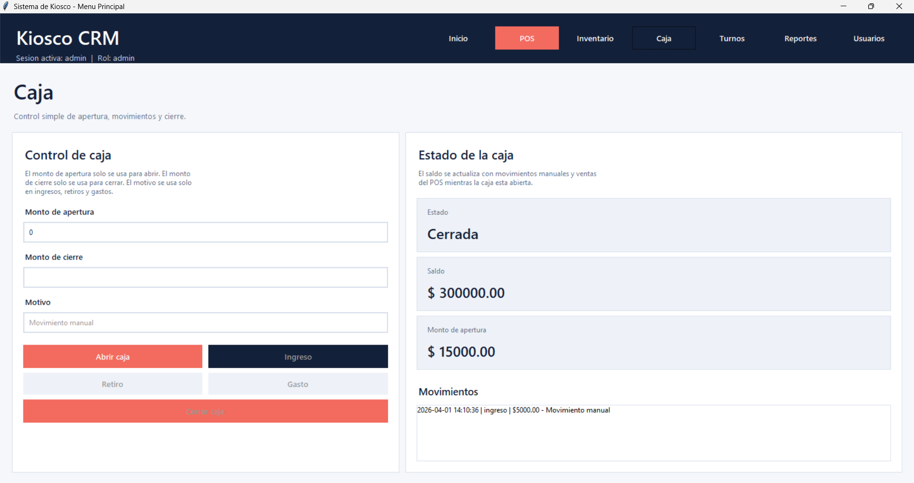
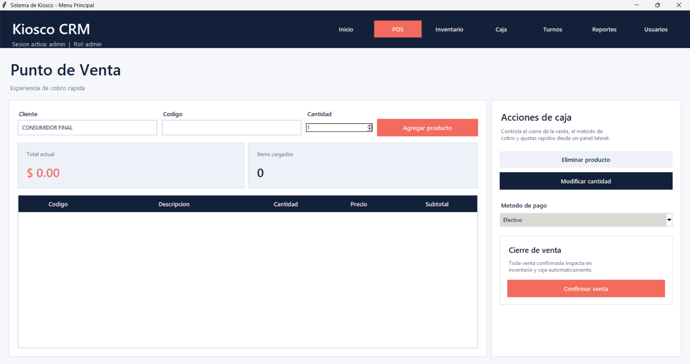
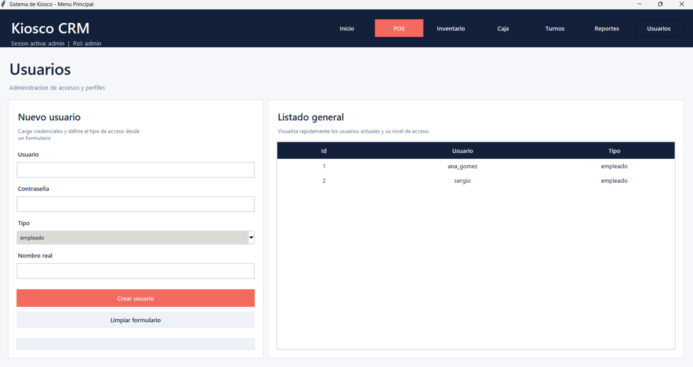
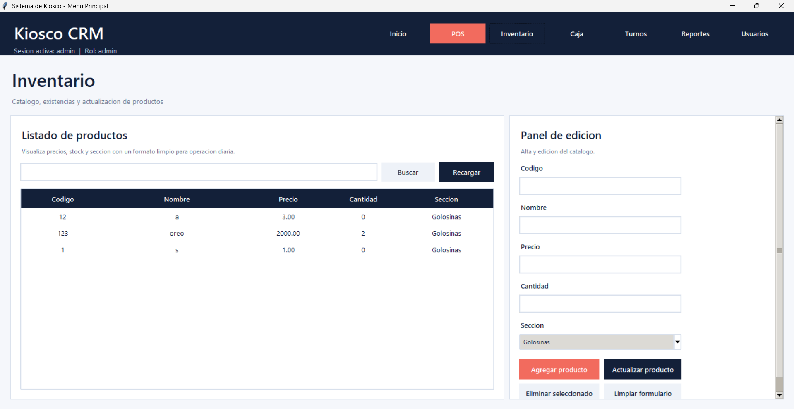
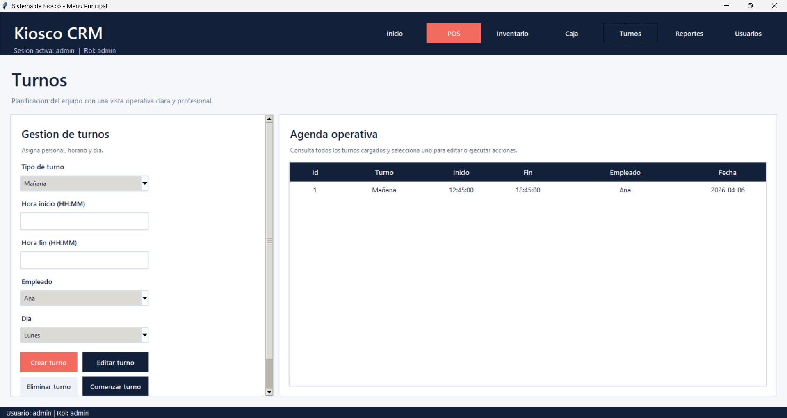
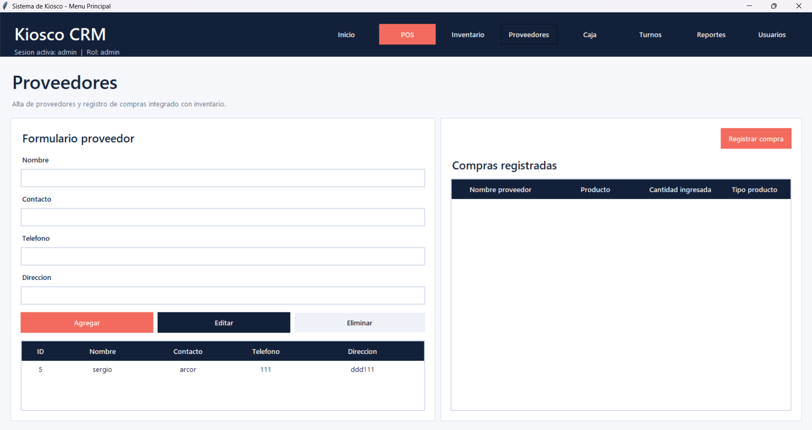

Vista principal del sistema con enfoque operativo y acceso rapido a modulos.
Python, Tkinter, MySQL y orientacion a objetos para ordenar la operacion diaria de un comercio.

Vista principal del sistema con enfoque operativo y acceso rapido a modulos.
Problema que resuelve: unificar ventas, stock, turnos, proveedores y reportes para tener control completo de la operacion de un kiosco.
Enfoque tecnico: arquitectura modular orientada a objetos, persistencia en base de datos y flujos de trabajo pensados para el uso diario.
Desarrolle este sistema para cubrir necesidades reales de gestion en un comercio pequeno. La aplicacion permite registrar ventas, administrar inventario, gestionar turnos de empleados y llevar seguimiento de proveedores con una interfaz clara y directa.






